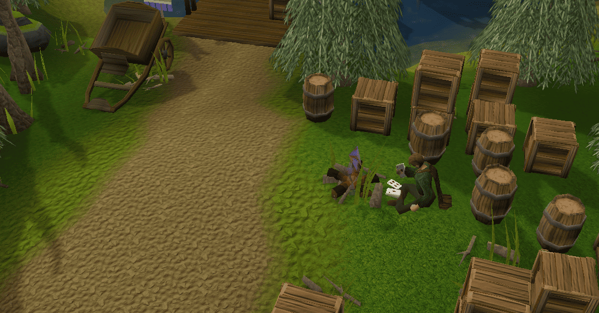

Welcome
Tip: The official version is updated according to the official updates, contains all the content that is on the live
If you're interested in the single-player version of the official release, follow:
 Official single-player release.
Official single-player release.If you're interested in the single-player version of the un-official release, follow:

Fork of 2009scape.
Table of Contents
- Requirements
- Forking the Repository
- Cloning the Repository
- Importing into IntelliJ IDEA
- Setting Up the Project
- Running the Application
- Setting Up GitLab with SSH
- License Information
Essentials
For Windows users - Enable developer mode in Windows settings first.
Make sure you have the following installed:
- Java 11: Download from Oracle or AdoptOpenJDK.
- IntelliJ IDEA: Download from JetBrains.
Forking the Repository
1. Click the Fork button at the top right to create a personal copy of the repository.
Cloning the Repository
1. After forking the repository, go to your fork's page.
2. Click the Clone button and copy the URL (either HTTPS or SSH).
3. Open a terminal or command prompt and run:
git clone <your-fork-url>Import into IntelliJ IDEA
1. Open IntelliJ IDEA.
2. Go to File > New > Project from Version Control > Git.
3. Paste the cloned repository URL into the URL field.
4. Click Clone.
GitLab VCS in IntelliJ IDEA
Generate an SSH key:
ssh-keygen -t ed25519 -C "<comment>"Add the SSH key to your GitLab account.
Configure Git:
git config --global user.name "Your Name"
git config --global user.email "your_email@example.com"Setting Up the Project
1. Open project in IntelliJ IDEA and navigate to File > Settings (or Preferences on macOS).
2. Under Build, Execution, Deployment > Build Tools, ensure Maven is configured correctly.
3. Ensure Java 11 or later is selected as the Project SDK.
4. Sync the Maven project by clicking on the Maven tab and clicking Refresh.
Launching
Run the application with Maven:
mvn exec:java -f pom.xmlLicense
This project is licensed under the AGPL 3.0.
You can find more information here.